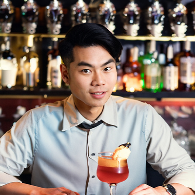
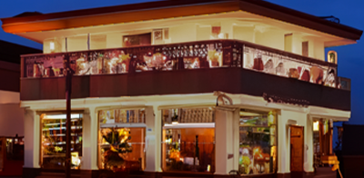
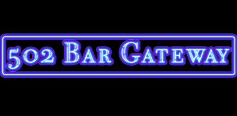

コンセプト
眠れないあなたのために夜に生まれる進捗は酒と共にある
夜遅くまで頑張るクリエイターや研究者のための、作業もできるバーです。快適に進捗をだすための環境としてこだわった席と飲食物をご用意しています。
代表者

倍成 音苑 (ばいなり ねおん)
高校卒業後、デジタルハリウッド・オンラインスクールにてWebデザインを勉強するかたわら、Bar Midnightsに勤務。
7年間のバーテンダー経験並びにフリーランスWebデザイナー経験から、クリエイター同士の交流や、夜遅くまで頑張る人々が作業をできるバーが欲しいと思い502 Bar Gatewayを開店。
現在は502 Bar Gatewayのオーナー兼バーテンダー。また、フリーランスでWebデザイナーとして活動中。
- 経歴：
- 2000年 4月Bar Midnightsに就職
- 2001年 1月デジハリオンラインスクール卒業
- 2001年2月WEBデザイナーとして活動開始
- 2007年 5月Bar Midnights退職
- 2007年 9月502 Bar Gateway 本店 オープン
- 2010年 9月502 Bar Gateway 明大前店 オープン
- 2012年 11月502 Bar Gateway 高田馬場店 オープン
- 2015年 3月502 Bar Gateway 渋谷店 オープン
- 
- 